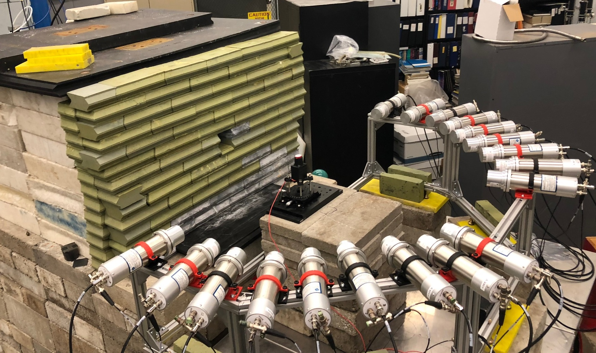

<li class="blog-post-item">
  <a href="https://journals.aps.org/prc/abstract/10.1103/PhysRevC.110.014613">
    <figure class="blog-banner-box">
      
    </figure>
    <div class="blog-content">
      <div class="blog-meta">
        <p class="presentation"></p>
        <span class="dot"></span>
        <time datetime="2024-07-10">July 10, 2024</time>
      </div>
      <h3 class="h3 blog-item-title">NaI[Tl] QF Publication</h3>
      <p class="blog-text">
        A collaboration between members of the COHERENT, ANAIS, and COSINE experiments collected data at TUNL to study the quenching of NaI[Tl] scintillator to low-energy nuclear recoils. We recently published our results, which highlight the importance of detector energy calibration in interpreting results!
      </p>
    </div>
  </a>
</li>
